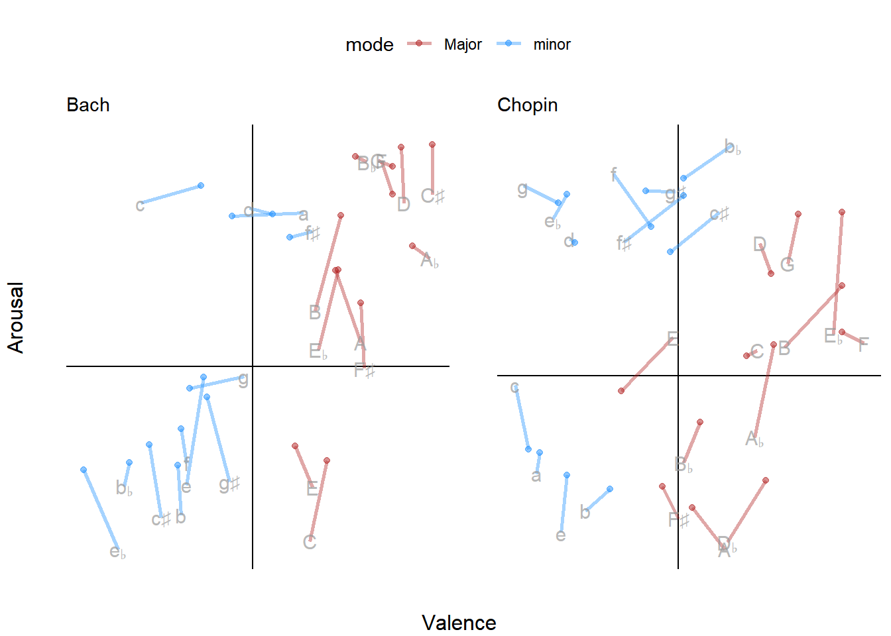
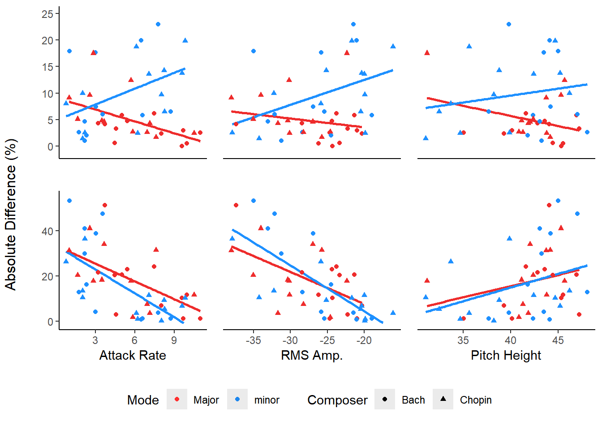
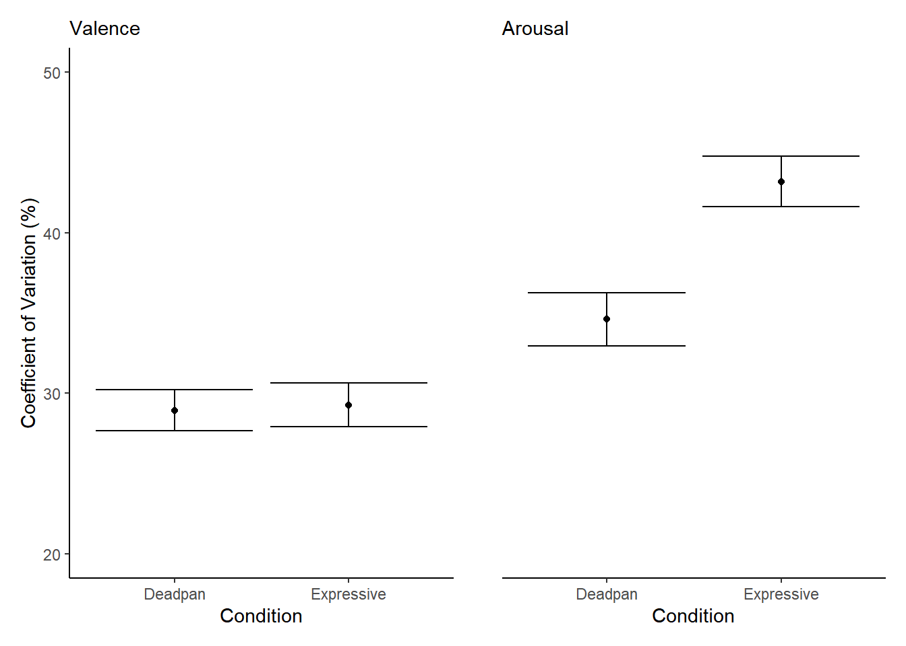
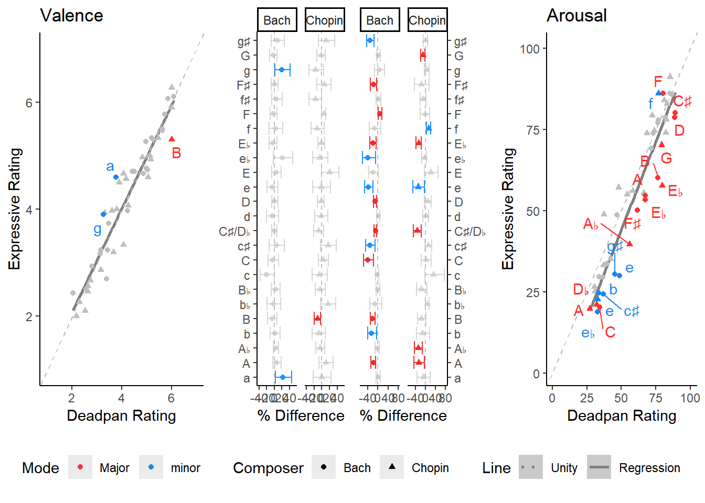
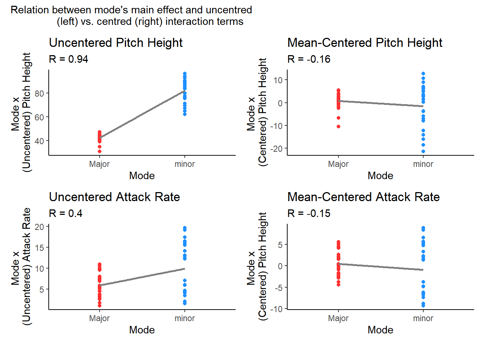

# load data
load(paste0(here::here(), '/Data/Bootstrap.RData'))
emoData <- read.csv(paste0(here::here(), '/Data/Ratings.csv'))
# load dependencies & functions, analyses
source(paste0(here::here(), '/R/Libraries.R'))
source(paste0(here::here(), '/R/Functions.R'))
source(paste0(here::here(), '/R/Preprocessing.R'))Expressive Deadpan Analyses
Data Set-up
Power Analysis
pwrss::pwrss.f.reg(r2 = 0.4, k = 3, power = .9) Linear Regression (F test)
R-squared Deviation from 0 (zero)
H0: r2 = 0
HA: r2 > 0
------------------------------
Statistical power = 0.9
n = 26
------------------------------
Numerator degrees of freedom = 3
Denominator degrees of freedom = 21.559
Non-centrality parameter = 17.04
Type I error rate = 0.05
Type II error rate = 0.1 Summarize valence and arousal ratings by piece
# create summary data frame
fullDat %>% group_by(composer, albumID, condition, key) %>%
summarize(arousal = mean(arousal),
valence = mean(valence)) -> summaryDatResearch Question 1
How similar are ratings?
p1 = pairedCircumplex(subset(fullDat, composer == 'bach'),
groupCol = 'expID', chosenLvls = c('141', '142')) +
labs(subtitle='Bach', x = '', y = '') +
theme(legend.position = 'bottom')
p2 = pairedCircumplex(chop, groupCol = 'expID',
chosenLvls = c('101', '137')) +
labs(subtitle='Chopin', x = '', y = '')
cowplot::get_plot_component(p1, 'guide-box-bottom') -> circLeg
grid.arrange(circLeg,
p1 + theme(legend.position = 'none'),
p2 + theme(legend.position = 'none'),
layout_matrix = circLayout,
bottom = 'Valence',
left = 'Arousal') # %>%
# ggsave(filename = paste0('Figures/Fig 1-',
# Sys.Date(), '.png'),
# width = 7.5, height = 4.5)Do deadpan & expressive conditions significantly differ in terms of valence and arousal?
The mean valence rating of deadpan listeners is 4.17 The SD valence rating of deadpan listeners is 1.62 The mean valence rating of expressive listeners is 4.17 The SD valence rating of expressive listeners is 1.68 The mean arousal rating of deadpan listeners is 60.14 The SD arousal rating of deadpan listeners is 26.56 The mean arousal rating of expressive listeners is 55.25 The SD arousal rating of expressive listeners is 28.6
# test differences (nonparametric)
wilcox.test(valence~as.factor(condition), data = summaryDat, paired = T, exact = F) -> t1
wilcox.test(arousal~as.factor(condition), data = summaryDat, paired = T, exact = F) -> t2
print(t1)
Wilcoxon signed rank test with continuity correction
data: valence by as.factor(condition)
V = 576, p-value = 0.9031
alternative hypothesis: true location shift is not equal to 0print(t2)
Wilcoxon signed rank test with continuity correction
data: arousal by as.factor(condition)
V = 942.5, p-value = 0.0002825
alternative hypothesis: true location shift is not equal to 0print(paste('Adjusted P', p.adjust(c(t1$p.value, t2$p.value))))[1] "Adjusted P 0.903106290500512" "Adjusted P 0.000564946450863395"as.numeric(rcompanion::wilcoxonPairedR(x = summaryDat$valence, g = summaryDat$condition, ci = T))[1] 0.0185 -0.2730 0.3170as.numeric(rcompanion::wilcoxonPairedR(x = summaryDat$arousal, g = summaryDat$condition, ci = T))[1] 0.525 0.277 0.723
arousal differs, valence doesn’t
Research Question 2
Do these differences appear for each composer?
# chopin comparisons
t1 <- wilcox.test(valence~condition,
data= subset(summaryDat, composer == 'bach'), paired = T, exact =F)
t2 <- wilcox.test(valence~condition,
data= subset(summaryDat, composer == 'chopin'), paired = T,
exact = F)
## bach -- arousal significantly differs
t3 <- wilcox.test(arousal~condition,
data= subset(summaryDat, composer == 'bach'), paired = T,
exact =F)
t4<- wilcox.test(arousal~condition,
data= subset(summaryDat, composer == 'chopin'), paired = T,
exact = F)
print(t1)
Wilcoxon signed rank test with continuity correction
data: valence by condition
V = 113, p-value = 0.4559
alternative hypothesis: true location shift is not equal to 0print(t2)
Wilcoxon signed rank test with continuity correction
data: valence by condition
V = 176.5, p-value = 0.4574
alternative hypothesis: true location shift is not equal to 0print(t3)
Wilcoxon signed rank test with continuity correction
data: arousal by condition
V = 272, p-value = 0.0005177
alternative hypothesis: true location shift is not equal to 0print(t4)
Wilcoxon signed rank test with continuity correction
data: arousal by condition
V = 201, p-value = 0.1491
alternative hypothesis: true location shift is not equal to 0p.adjust(c(t1$p.value, t2$p.value, t3$p.value, t4$p.value))[1] 0.911768954 0.911768954 0.002070788 0.447182154remove(t1, t2, t3, t4)
rcompanion::wilcoxonPairedR(x = subset(summaryDat, composer == 'bach')$valence,
g = subset(summaryDat, composer == 'bach')$condition, ci = T) |> as.numeric()[1] -0.159 -0.565 0.259rcompanion::wilcoxonPairedR(x = subset(summaryDat, composer == 'chopin')$valence,
g = subset(summaryDat, composer == 'chopin')$condition, ci = T) |> as.numeric()[1] 0.155 -0.257 0.563rcompanion::wilcoxonPairedR(x = subset(summaryDat, composer == 'bach')$arousal,
g = subset(summaryDat, composer == 'bach')$condition, ci = T) |> as.numeric()[1] 0.712 0.461 0.841rcompanion::wilcoxonPairedR(x = subset(summaryDat, composer == 'chopin')$arousal,
g = subset(summaryDat, composer == 'chopin')$condition, ci = T) |> as.numeric()[1] 0.298 -0.128 0.665Which Features Predict Valence and Arousal Differences?
To assess this, we calculate the percent difference of valence and arousal ratings,
\[ d(x, y) = \frac{|x-y|}{[\frac{(x+y)}{2}]}*100, \]
where \(x\) represents ratings in the expressive condition averaged by piece and \(y\) represents ratings in the deadpan condition averaged by piece.
# first calculate averaged values per piece in each condition
expressive %>% group_by(composer, key) %>%
summarize(valence = mean(valence),
arousal = mean(arousal),
arPerf = mean(arPerf),
pitchHeight = mean(pitchHeight),
rms = mean(rms),
mode = unique(mode)) -> expressiveRatingsAvg`summarise()` has grouped output by 'composer'. You can override using the
`.groups` argument.deadpan %>% group_by(composer, key) %>%
summarize(valence = mean(valence),
arousal = mean(arousal)) -> deadpanRatingsAvg`summarise()` has grouped output by 'composer'. You can override using the
`.groups` argument.# now calculate percentage difference in ratings:
expressiveRatingsAvg$valenceDiff <- .getPercentDifference(expressiveRatingsAvg$valence, deadpanRatingsAvg$valence)
expressiveRatingsAvg$arousalDiff <- .getPercentDifference(expressiveRatingsAvg$arousal, deadpanRatingsAvg$arousal)summary(expressiveRatingsAvg$valenceDiff) Min. 1st Qu. Median Mean 3rd Qu. Max.
0.000 2.615 4.964 7.299 9.755 22.951 summary(expressiveRatingsAvg$arousalDiff) Min. 1st Qu. Median Mean 3rd Qu. Max.
0.1605 4.1255 12.3498 17.0744 24.6988 53.3679 How similar are valence and arousal ratings?
# overall correlations
cor.test(subset(summaryDat, condition == 'expressive')$valence, subset(summaryDat, condition == 'deadpan')$valence) -> t1
cor.test(subset(summaryDat, condition == 'expressive')$arousal, subset(summaryDat, condition == 'deadpan')$arousal) -> t2
print(t1)
Pearson's product-moment correlation
data: subset(summaryDat, condition == "expressive")$valence and subset(summaryDat, condition == "deadpan")$valence
t = 22.059, df = 46, p-value < 2.2e-16
alternative hypothesis: true correlation is not equal to 0
95 percent confidence interval:
0.9221514 0.9751399
sample estimates:
cor
0.9558412 print(t2)
Pearson's product-moment correlation
data: subset(summaryDat, condition == "expressive")$arousal and subset(summaryDat, condition == "deadpan")$arousal
t = 19.631, df = 46, p-value < 2.2e-16
alternative hypothesis: true correlation is not equal to 0
95 percent confidence interval:
0.903756 0.969064
sample estimates:
cor
0.9451795 print(p.adjust(c(t1$p.value, t2$p.value)))[1] 8.395871e-26 5.412108e-24remove(t1, t2)Do values significantly differ from zero?
wilcox.test(expressiveRatingsAvg$arousalDiff, exact = F) -> t1
wilcox.test(expressiveRatingsAvg$valenceDiff, exact = F) -> t2
print(t1)
Wilcoxon signed rank test with continuity correction
data: expressiveRatingsAvg$arousalDiff
V = 1176, p-value = 1.684e-09
alternative hypothesis: true location is not equal to 0print(t2)
Wilcoxon signed rank test with continuity correction
data: expressiveRatingsAvg$valenceDiff
V = 1128, p-value = 2.475e-09
alternative hypothesis: true location is not equal to 0print(p.adjust(c(t1$p.value, t2$p.value)))[1] 3.367163e-09 3.367163e-09remove(t1, t2)Valence and arousal percent differences significantly differ from 0
Do they differ between major and minor modes?
expressiveRatingsAvg %>% group_by(mode) %>%
summarize(meanValenceDiff = mean(valenceDiff),
sdValenceDiff=sd(valenceDiff),
meanArousalDiff = mean(arousalDiff), sdArousalDiff=sd(arousalDiff))# A tibble: 2 × 5
mode meanValenceDiff sdValenceDiff meanArousalDiff sdArousalDiff
<chr> <dbl> <dbl> <dbl> <dbl>
1 Major 4.79 3.98 18.0 13.2
2 minor 9.81 6.86 16.1 16.4Do differences between conditions relate to mode?
wilcox.test(expressiveRatingsAvg$valenceDiff~expressiveRatingsAvg$mode,
exact = F) -> t1
wilcox.test(expressiveRatingsAvg$arousalDiff~expressiveRatingsAvg$mode,
exact = F) -> t2
print(t1)
Wilcoxon rank sum test with continuity correction
data: expressiveRatingsAvg$valenceDiff by expressiveRatingsAvg$mode
W = 157, p-value = 0.007124
alternative hypothesis: true location shift is not equal to 0print(t2)
Wilcoxon rank sum test with continuity correction
data: expressiveRatingsAvg$arousalDiff by expressiveRatingsAvg$mode
W = 336, p-value = 0.3274
alternative hypothesis: true location shift is not equal to 0print(p.adjust(c(t1$p.value, t2$p.value)))[1] 0.01424718 0.32736584remove(t1, t2)
wilcoxonR(x=expressiveRatingsAvg$valence,
g=expressiveRatingsAvg$mode, ci = T) |> as.numeric()[1] 0.794 0.687 0.844wilcoxonR(x=expressiveRatingsAvg$arousal,
g=expressiveRatingsAvg$mode, ci = T) |> as.numeric()[1] -0.0179 -0.3230 0.2680What cues predict differences?
First, we examine differences across major and minor pieces:
# now valence...
percentCorrelationPlot(expressiveRatingsAvg,
y = expressiveRatingsAvg$valenceDiff,
ylim = c(-1,25),
x = expressiveRatingsAvg$arPerf,
axis.text.x = element_blank(),
axis.ticks.x = element_blank(),
legend.position = 'none') -> cp1
percentCorrelationPlot(expressiveRatingsAvg,
y = expressiveRatingsAvg$valenceDiff,
ylim = c(-1,25),
x = expressiveRatingsAvg$rms,
axis.text.y = element_blank(),
axis.ticks.y = element_blank(),
axis.title.y = element_blank(),
axis.line.y = element_blank(),
axis.text.x = element_blank(),
axis.ticks.x = element_blank(),
legend.position = 'none') -> cp2
percentCorrelationPlot(expressiveRatingsAvg,
y = expressiveRatingsAvg$valenceDiff,
ylim = c(-1,25),
x = expressiveRatingsAvg$pitchHeight,
axis.text.y = element_blank(),
axis.ticks.y = element_blank(),
axis.title.y = element_blank(),
axis.line.y = element_blank(),
axis.text.x = element_blank(),
axis.ticks.x = element_blank(),
legend.position = 'none') -> cp3
## OVER AROUSAL
percentCorrelationPlot(expressiveRatingsAvg,
y = expressiveRatingsAvg$arousalDiff,
x = expressiveRatingsAvg$arPerf,
xLab = 'Attack Rate',
legend.position = 'none') -> cp4
percentCorrelationPlot(expressiveRatingsAvg,
y = expressiveRatingsAvg$arousalDiff,
x = expressiveRatingsAvg$rms,
xLab = 'RMS Amp.',
axis.text.y = element_blank(),
axis.ticks.y = element_blank(),
axis.title.y = element_blank(),
axis.line.y = element_blank(),
legend.position = 'none') -> cp5
percentCorrelationPlot(expressiveRatingsAvg,
y = expressiveRatingsAvg$arousalDiff,
x = expressiveRatingsAvg$pitchHeight,
xLab = 'Pitch Height',
axis.text.y = element_blank(),
axis.ticks.y = element_blank(),
axis.title.y = element_blank(),
axis.line.y = element_blank(),
legend.position = 'none') -> cp6
grid.arrange(percentLegend,
cp1, cp2, cp3, cp4, cp5, cp6,
left = 'Absolute Difference (%)',
# ncol = 3, nrow = 2,
layout_matrix = pctCorLay) -> cuePercentPlot
# ggsave(filename = paste0('Figures/Fig 2-', Sys.Date(), '.png'),
# plot = cuePercentPlot,
# width = 7.5, height = 4.5)diffsMaj <- subset(expressiveRatingsAvg, mode == 'Major')
diffsMin <- subset(expressiveRatingsAvg, mode == 'minor')
cor.test(diffsMin$arPerf, diffsMin$valenceDiff) -> t1
cor.test(diffsMaj$arPerf, diffsMaj$valenceDiff) -> t2
cor.test(diffsMin$rms, diffsMin$valenceDiff) -> t3
cor.test(diffsMaj$rms, diffsMaj$valenceDiff) -> t4
cor.test(diffsMin$pitchHeight, diffsMin$valenceDiff) -> t5
cor.test(diffsMaj$pitchHeight, diffsMaj$valenceDiff) -> t6
print(t1)
Pearson's product-moment correlation
data: diffsMin$arPerf and diffsMin$valenceDiff
t = 2.2906, df = 22, p-value = 0.03194
alternative hypothesis: true correlation is not equal to 0
95 percent confidence interval:
0.0430442 0.7155517
sample estimates:
cor
0.4388213 print(t2)
Pearson's product-moment correlation
data: diffsMaj$arPerf and diffsMaj$valenceDiff
t = -3.0323, df = 22, p-value = 0.006119
alternative hypothesis: true correlation is not equal to 0
95 percent confidence interval:
-0.7762915 -0.1786339
sample estimates:
cor
-0.5429084 print(t3)
Pearson's product-moment correlation
data: diffsMin$rms and diffsMin$valenceDiff
t = 2.1183, df = 22, p-value = 0.04568
alternative hypothesis: true correlation is not equal to 0
95 percent confidence interval:
0.009828117 0.698940886
sample estimates:
cor
0.411593 print(t4)
Pearson's product-moment correlation
data: diffsMaj$rms and diffsMaj$valenceDiff
t = -1.0233, df = 22, p-value = 0.3173
alternative hypothesis: true correlation is not equal to 0
95 percent confidence interval:
-0.5677389 0.2081325
sample estimates:
cor
-0.2131612 print(t5)
Pearson's product-moment correlation
data: diffsMin$pitchHeight and diffsMin$valenceDiff
t = 0.86122, df = 22, p-value = 0.3984
alternative hypothesis: true correlation is not equal to 0
95 percent confidence interval:
-0.2403101 0.5443349
sample estimates:
cor
0.1805934 print(t6)
Pearson's product-moment correlation
data: diffsMaj$pitchHeight and diffsMaj$valenceDiff
t = -1.715, df = 22, p-value = 0.1004
alternative hypothesis: true correlation is not equal to 0
95 percent confidence interval:
-0.65593466 0.06964085
sample estimates:
cor
-0.343403 print(p.adjust(c(t1$p.value, t2$p.value, t3$p.value,
t4$p.value, t5$p.value, t6$p.value)))[1] 0.15969069 0.03671351 0.18272732 0.63454293 0.63454293 0.30119947remove(t1,t2,t3,t4,t5,t6)
cor.test(diffsMin$arPerf, diffsMin$arousalDiff) -> t1
cor.test(diffsMaj$arPerf, diffsMaj$arousalDiff) -> t2
cor.test(diffsMin$rms, diffsMin$arousalDiff) -> t3
cor.test(diffsMaj$rms, diffsMaj$arousalDiff) -> t4
cor.test(diffsMin$pitchHeight, diffsMin$arousalDiff) -> t5
cor.test(diffsMaj$pitchHeight, diffsMaj$arousalDiff) -> t6
print(t1)
Pearson's product-moment correlation
data: diffsMin$arPerf and diffsMin$arousalDiff
t = -4.02, df = 22, p-value = 0.0005744
alternative hypothesis: true correlation is not equal to 0
95 percent confidence interval:
-0.8349658 -0.3354137
sample estimates:
cor
-0.6507595 print(t2)
Pearson's product-moment correlation
data: diffsMaj$arPerf and diffsMaj$arousalDiff
t = -3.3373, df = 22, p-value = 0.002985
alternative hypothesis: true correlation is not equal to 0
95 percent confidence interval:
-0.7967980 -0.2301824
sample estimates:
cor
-0.5797468 print(t3)
Pearson's product-moment correlation
data: diffsMin$rms and diffsMin$arousalDiff
t = -5.2507, df = 22, p-value = 2.877e-05
alternative hypothesis: true correlation is not equal to 0
95 percent confidence interval:
-0.8834048 -0.4897002
sample estimates:
cor
-0.7457741 print(t4)
Pearson's product-moment correlation
data: diffsMaj$rms and diffsMaj$arousalDiff
t = -3.0989, df = 22, p-value = 0.005239
alternative hypothesis: true correlation is not equal to 0
95 percent confidence interval:
-0.7809724 -0.1901185
sample estimates:
cor
-0.551239 print(t5)
Pearson's product-moment correlation
data: diffsMin$pitchHeight and diffsMin$arousalDiff
t = 1.7613, df = 22, p-value = 0.09208
alternative hypothesis: true correlation is not equal to 0
95 percent confidence interval:
-0.06041555 0.66118110
sample estimates:
cor
0.3515489 print(t6)
Pearson's product-moment correlation
data: diffsMaj$pitchHeight and diffsMaj$arousalDiff
t = 1.3209, df = 22, p-value = 0.2001
alternative hypothesis: true correlation is not equal to 0
95 percent confidence interval:
-0.1485734 0.6079841
sample estimates:
cor
0.2710696 print(round(p.adjust(c(t1$p.value, t2$p.value, t3$p.value,
t4$p.value, t5$p.value, t6$p.value), method = 'none'), 5))[1] 0.00057 0.00299 0.00003 0.00524 0.09208 0.20012remove(t1,t2,t3,t4,t5,t6)cor.test(expressiveRatingsAvg$arousalDiff, expressiveRatingsAvg$arPerf)
Pearson's product-moment correlation
data: expressiveRatingsAvg$arousalDiff and expressiveRatingsAvg$arPerf
t = -5.06, df = 46, p-value = 7.186e-06
alternative hypothesis: true correlation is not equal to 0
95 percent confidence interval:
-0.7539999 -0.3780759
sample estimates:
cor
-0.5979736 cor.test(expressiveRatingsAvg$arousalDiff, expressiveRatingsAvg$rms)
Pearson's product-moment correlation
data: expressiveRatingsAvg$arousalDiff and expressiveRatingsAvg$rms
t = -6.0856, df = 46, p-value = 2.155e-07
alternative hypothesis: true correlation is not equal to 0
95 percent confidence interval:
-0.8001448 -0.4735730
sample estimates:
cor
-0.6678437 cor.test(expressiveRatingsAvg$arousalDiff, expressiveRatingsAvg$pitchHeight)
Pearson's product-moment correlation
data: expressiveRatingsAvg$arousalDiff and expressiveRatingsAvg$pitchHeight
t = 2.3473, df = 46, p-value = 0.02327
alternative hypothesis: true correlation is not equal to 0
95 percent confidence interval:
0.04731408 0.55922017
sample estimates:
cor
0.327052 Which cues predict differences in valence and arousal?
Attack rate and RMS significantly predict differences in arousal ratings, whereas pitch height and RMS significantly predict differences in valence ratings
Beta Regression
Perform beta regression to assess significance of differences while dealing with positive (0,1) data:
Create transformation function because data can include 0 and 1 in range:
\[(y * (n - 1) + 0.5)/n\]
arousalDiffB = betaTransform(expressiveRatingsAvg$arousalDiff)
valenceDiffB = betaTransform(expressiveRatingsAvg$valenceDiff)
# center values of attack rate, rms, pitch height
expressiveRatingsAvg2 = expressiveRatingsAvg
expressiveRatingsAvg2$arPerf = expressiveRatingsAvg$arPerf - mean(expressiveRatingsAvg$arPerf)
expressiveRatingsAvg2$pitchHeight = expressiveRatingsAvg$pitchHeight - mean(expressiveRatingsAvg$pitchHeight)
expressiveRatingsAvg2$rms = expressiveRatingsAvg$rms - mean(expressiveRatingsAvg$rms)
expressiveRatingsAvg2$mode = as.numeric(factor(expressiveRatingsAvg$mode)) - 1.5set.seed(123)
bregAro = betareg(arousalDiffB ~ arPerf + rms +
pitchHeight + mode, data = expressiveRatingsAvg2)
bregVal = betareg(valenceDiffB ~ arPerf + rms +
pitchHeight + mode + (arPerf*mode) +
(rms*mode) + (pitchHeight*mode),
data = expressiveRatingsAvg2)
summary(bregAro)
Call:
betareg(formula = arousalDiffB ~ arPerf + rms + pitchHeight + mode, data = expressiveRatingsAvg2)
Standardized weighted residuals 2:
Min 1Q Median 3Q Max
-2.0852 -0.8814 0.3280 0.7495 1.5493
Coefficients (mean model with logit link):
Estimate Std. Error z value Pr(>|z|)
(Intercept) -1.68156 0.10578 -15.897 < 2e-16 ***
arPerf -0.11196 0.04361 -2.567 0.01025 *
rms -0.06953 0.02191 -3.174 0.00151 **
pitchHeight 0.04481 0.02407 1.861 0.06271 .
mode -0.12270 0.19954 -0.615 0.53860
Phi coefficients (precision model with identity link):
Estimate Std. Error z value Pr(>|z|)
(phi) 14.452 2.974 4.86 1.18e-06 ***
---
Signif. codes: 0 '***' 0.001 '**' 0.01 '*' 0.05 '.' 0.1 ' ' 1
Type of estimator: ML (maximum likelihood)
Log-likelihood: 54.99 on 6 Df
Pseudo R-squared: 0.5459
Number of iterations: 15 (BFGS) + 4 (Fisher scoring) summary(bregVal)
Call:
betareg(formula = valenceDiffB ~ arPerf + rms + pitchHeight + mode +
(arPerf * mode) + (rms * mode) + (pitchHeight * mode), data = expressiveRatingsAvg2)
Standardized weighted residuals 2:
Min 1Q Median 3Q Max
-1.9831 -0.5145 -0.2374 0.8197 2.2378
Coefficients (mean model with logit link):
Estimate Std. Error z value Pr(>|z|)
(Intercept) -2.439136 0.084534 -28.854 < 2e-16 ***
arPerf -0.011119 0.034075 -0.326 0.74420
rms 0.008926 0.018879 0.473 0.63636
pitchHeight -0.011226 0.019323 -0.581 0.56127
mode 0.508362 0.160029 3.177 0.00149 **
arPerf:mode 0.207996 0.068318 3.045 0.00233 **
rms:mode 0.036708 0.037769 0.972 0.33110
pitchHeight:mode 0.111812 0.038733 2.887 0.00389 **
Phi coefficients (precision model with identity link):
Estimate Std. Error z value Pr(>|z|)
(phi) 44.843 9.311 4.816 1.46e-06 ***
---
Signif. codes: 0 '***' 0.001 '**' 0.01 '*' 0.05 '.' 0.1 ' ' 1
Type of estimator: ML (maximum likelihood)
Log-likelihood: 92.86 on 9 Df
Pseudo R-squared: 0.4849
Number of iterations: 20 (BFGS) + 2 (Fisher scoring) Which pieces significantly differ?
Next we employ a bootstrap approach to assess how many pieces significantly differed in valence and arousal
# first, prepare data. Need 48 unique piece IDs
fullDat$pieceID = paste0(fullDat$pieceID,
substr(fullDat$composer, 1, 1))# set.seed(1)
# bootstrapCircumplexDifference(
# subset(fullDat, condition == 'expressive'),
# subset(fullDat, condition == 'deadpan'),
# returnSummary = F, replications = 10000,
# sampleSize = 30,
# xlimsVal = c(-1.5,1.5),
# xlimsAro = c(-1.5,1.5),
# ylimsVal = c(-1.5,1.5),
# ylimsAro = c(-1.5,1.5), scaleVars = F) -> bootData
# save(bootData, file = '~/Bootstrap.RData')Coefficients of Variation
data.frame(
group = c('Expressive', 'Deadpan'),
meanCVVal = c(mean(bootData$valenceA_cv), mean(bootData$valenceB_cv)),
lciCVVal = c(quantile(bootData$valenceA_cv, c(0.025)),
quantile(bootData$valenceB_cv, c(0.025))),
uciCVVal = c(quantile(bootData$valenceA_cv, c(0.975)),
quantile(bootData$valenceB_cv, c(0.975))),
meanCVAro = c(mean(bootData$arousalA_cv),mean(bootData$arousalB_cv)),
lciCVAro = c(quantile(bootData$arousalA_cv, c(0.025)),
quantile(bootData$arousalB_cv, c(0.025))),
uciCVAro = c(quantile(bootData$arousalA_cv, c(0.975)),
quantile(bootData$arousalB_cv, c(0.975)))
) -> expressCVSig
ggplot(expressCVSig, aes(x = group, y = meanCVVal*100,
ymin = lciCVVal*100, ymax = uciCVVal*100))+
geom_point()+ geom_errorbar()+ylim(20, 50)+theme_classic()+
labs(y = 'Coefficient of Variation (%)', x = 'Condition', subtitle='Valence')+
ggplot(expressCVSig, aes(x = group, y = meanCVAro*100,
ymin = lciCVAro*100, ymax = uciCVAro*100))+
geom_point()+ geom_errorbar()+ylim(20,50)+theme_classic()+
labs(y = '', x = 'Condition', subtitle='Arousal')+
theme(axis.ticks.y = element_blank(),
axis.text.y = element_blank(),
axis.line.y = element_blank())
#ggsave(filename = paste0('Figures/Fig 4-', Sys.Date(), '.png'))apply(expressCVSig,2, function(x) round(as.numeric(x)*100, 4)) group meanCVVal lciCVVal uciCVVal meanCVAro lciCVAro uciCVAro
[1,] NA 29.2690 27.9298 30.6597 43.1718 41.6172 44.7738
[2,] NA 28.9314 27.6538 30.2424 34.6069 32.9538 36.2531Plot differences
bootPlotDF$key <- nameKeysSimple(substr(bootPlotDF$pieceID, 1, nchar(bootPlotDF$pieceID)-1))
bootPlotDF$composer <- as.factor(substr(bootPlotDF$pieceID,
nchar(bootPlotDF$pieceID),
nchar(bootPlotDF$pieceID)))
levels(bootPlotDF$composer) = c('bach', 'chopin')
# temporarily change key back to a character vector to replace c# value with db
bootPlotDF$key = as.character(bootPlotDF$key)
bootPlotDF$key[bootPlotDF$composer == 'chopin' &
bootPlotDF$key == 'C#'] <- 'Db'
# now convert back to factor
bootPlotDF$key = as.factor(bootPlotDF$key)
bootPlotDF$key = prettyKeyCol(bootPlotDF$key)bootPlotDF$sigDifValence = sign(bootPlotDF$changeValenceLCI) == sign(bootPlotDF$changeValenceUCI)
bootPlotDF$sigDifArousal = sign(bootPlotDF$changeArousalLCI) == sign(bootPlotDF$changeArousalUCI)
summary(bootPlotDF$sigDifArousal) Mode FALSE TRUE
logical 28 20 summary(bootPlotDF$sigDifValence) Mode FALSE TRUE
logical 45 3 20 pieces significantly differed in arousal, 13 of which were by Bach
3 pieces differed significantly in valence
Note: Bach and Chopin wrote G# as key sig in minor keys, but Ab in major keys; Chopin wrote in Db minor.
# change dimensions for easy visualization
summaryDat[,!colnames(summaryDat) == 'albumID'] %>%
pivot_wider(names_from = 'condition', values_from = c('valence', 'arousal')) -> wideDat
wideDat$mode <- factor(wideDat$key == tolower(wideDat$key))
levels(wideDat$mode) = c('Major', 'minor')
# show ids where difference is significant
corrSigPlot = data.frame()
for(thisComposer in c('bach', 'chopin')) {
# subset by composer
wideDatSS = subset(wideDat, composer == thisComposer)
# subset bootstrap simulations
bootPlotSS = subset(bootPlotDF, composer == thisComposer)
# check which keys yield sig difference in bootplot
wideDatSS$labelsValence = wideDatSS$key %in% bootPlotSS$key[bootPlotSS$sigDifValence == T]
wideDatSS$labelsArousal = wideDatSS$key %in% bootPlotSS$key[bootPlotSS$sigDifArousal == T]
# bind to data frame
corrSigPlot <- rbind(corrSigPlot, wideDatSS)
}
# hide non-significant key signatures for valence and change mode colour to grey
corrSigPlot$key2 = corrSigPlot$key
corrSigPlot$key2[!corrSigPlot$labelsValence] = ''
corrSigPlot$mode2 = corrSigPlot$mode
levels(corrSigPlot$mode2[!corrSigPlot$labelsValence]) = c('*', '*')
corrSigPlot$key3 = corrSigPlot$key
corrSigPlot$key3[!corrSigPlot$labelsArousal] = ''
corrSigPlot$mode3 = corrSigPlot$mode
levels(corrSigPlot$mode3[!corrSigPlot$labelsArousal]) = c('*', '*')# now plot figures:
corrSigPlot %>% ggplot(aes(x = valence_deadpan, y = valence_expressive, label = key2, alpha = mode2)) +
geom_smooth(method='lm',linetype = 1,color = 'grey50', se = F, alpha = 0.7)+
geom_abline(color = 'grey', linetype = 2)+
geom_point(color = 'grey',aes(shape = composer, color = mode2, alpha = mode2))+
geom_point(data = subset(corrSigPlot, !is.na(corrSigPlot$mode2)),
aes(shape = composer, color = mode2, alpha = mode2))+
geom_text_repel(aes(color = mode2, alpha = mode2), max.overlaps = 12)+
# stat_cor(method="pearson", r.digits = 5, p.accuracy = 0.01)+
theme_classic()+
scale_colour_manual(values = c('firebrick1', 'dodgerblue2'))+
scale_alpha_manual(values = c(1,1,0.2))+
labs(x='Deadpan Rating',y='Expressive Rating')+
ggtitle('Valence') +
theme(legend.position = 'none') -> cc1
corrSigPlot %>% ggplot(aes(x = arousal_deadpan, y = arousal_expressive, label = key3,
alpha = mode3)) +
geom_smooth(method='lm',linetype = 1,color = 'grey50', se = F, alpha = 0.7)+
geom_abline(color = 'grey', linetype = 2)+
geom_point(color = 'grey', aes(shape = composer, color = mode3, alpha = mode3))+
geom_point(data = subset(corrSigPlot, !is.na(corrSigPlot$mode3)), aes(shape = composer, color = mode3, alpha = mode3))+
geom_text_repel(aes(color = mode3, alpha = mode3), max.overlaps = 15, nudge_y = 0.2)+
#stat_cor(method="pearson", r.digits = 5, p.accuracy = 0.01)+
theme_classic()+
scale_colour_manual(values = c('firebrick1', 'dodgerblue2'))+
scale_alpha_manual(values = c(1,1,0.2))+
scale_y_continuous(position = 'right')+
labs(x='Deadpan Rating',y='Expressive Rating')+
ggtitle('Arousal') +
theme(legend.position = 'none') -> cc2# layout figures...
cc1<-cc1+xlim(1,7)+ylim(1,7)+labs(x='Deadpan Rating',y='Expressive Rating')
cc2<-cc2+xlim(1,100)+ylim(1,100)+labs(x='Deadpan Rating',y='Expressive Rating')Scale for y is already present.
Adding another scale for y, which will replace the existing scale.grid.arrange(correlationLegend,
cc1,
bs1+theme(axis.title.y = element_blank()),
cc2,
bs2+theme(axis.title.y = element_blank()),
layout_matrix = corrSigLayout) -> all_corr_plots
#ggsave(paste0('Figures/Fig 3-', Sys.Date(), '.png'), plot = all_corr_plots,
# height = 5, width = 12.5, units = 'in')Supplemental Analyses
This analyses how uncentered estimates contributed to multicollinearity with mode
# convert mode to numeric variable for point-biserial correlation: x = as.numeric(factor(expressiveRatingsAvg$mode)) # define uncentered pitch height z = expressiveRatingsAvg$pitchHeight # define uncentered attack rate w = expressiveRatingsAvg$arPerf # define interaction between mode and uncentered pitch height xz = x*z # define interaction between mode and uncentered attack rate xw = x*w # define mean-centered pitch height z_c = z - mean(z) # define mean-centered attack rate w_c = w - mean(w) # define interaction between mean-centered mode and pitch height xz_c = x*z_c # define interaction between mean-centered mode and attack rate xw_c = x*w_c
#plot each relation between mode and interaction terms
plotCorrelation(x, xz, xLab = 'Mode', yLab = 'Mode x \n(Uncentered) Pitch Height')+
labs(title = 'Uncentered Pitch Height')+
plotCorrelation(x, xz_c, xLab = 'Mode', yLab = 'Mode x \n(Centered) Pitch Height')+
labs(title = 'Mean-Centered Pitch Height')+
plotCorrelation(x, xw, xLab = 'Mode', yLab = 'Mode x \n(Uncentered) Attack Rate')+
labs(title = 'Uncentered Attack Rate')+
plotCorrelation(x, xw_c, xLab = 'Mode', yLab = 'Mode x \n(Centered) Pitch Height')+
labs(title = 'Mean-Centered Attack Rate')+
plot_annotation(subtitle = "Relation between mode's main effect and uncentred
(left) vs. centred (right) interaction terms") `geom_smooth()` using formula = 'y ~ x'
`geom_smooth()` using formula = 'y ~ x'
`geom_smooth()` using formula = 'y ~ x'
`geom_smooth()` using formula = 'y ~ x'
#ggsave('Figures/SupplementalFig.png')Correlation between mode and (i) mode x pitch height interaction term (top); (ii) mode x attack rate interaction term (bottom). Left: pitch height and attack rate uncentered; right: pitch height and attack rate centered at respective mean value.